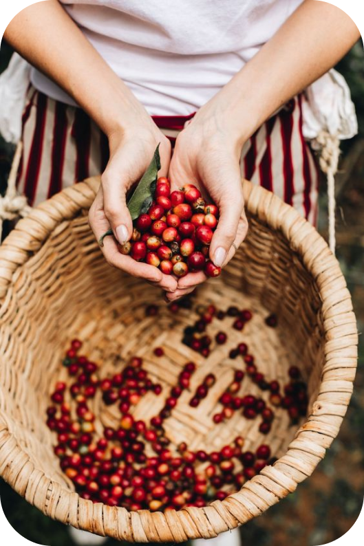
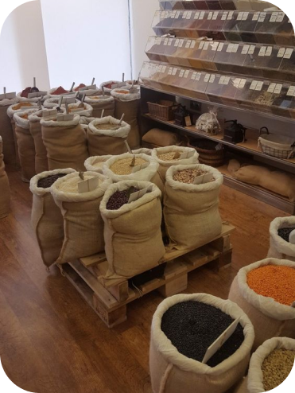

Kebaikan dari awal
Kami percaya bahwa secangkir kopi yang kamu minum di gerai Grunfeld, dengan kenikmatan dan cita rasa terbaiknya berawal dari bagaimana kita memastikan hasil panen terbaik dari perkebunan kopi.
Langkah 1 : bibit yang baik
Langkah pertama untuk mendapatkan panen terbaik adalah pemilihan bibit terbaik, seperti varietas andungsari, typica, bourbon, dll. Bibit kopi yang berumur 7 bulan langsung di tanam dan para mitra tani kami melakukan pemupukan tanaman secara rutin dengan pupuk organik.
Langkah 2 : Petik Merah
Buah kopi kita petik satu per satu dengan tangan petani langsung, tidak dipetik secara bersamaan (rampasan/racutan). Proses petik merah ini berguna untuk menjaga kesehatan tanaman kopi yang berbuah di panen berikutnya.
Langkah 3 : Sortasi Ceri
Proses penting selanjutnya ada sortasi ceri. Kami melakukan dengan merendam buah kopi, bila mengapung di permukaan air maka buah kopi memiliki cacat/berpenyakit, dan buah kopi yang tenggelam adalah buah kopi (merah) berkualitas baik yang kita pilih.
Langkah 4 : Pengolahan Ceri
Berikutnya kita proses pemisahan biji dengan kulit dagingnya dan dikeringkan sampai dengan kelembabannya + 10-13%. Proses pengolahan ini bermacam-macam mulai dari natural process, full washed process, semi washed process dan honey process. Pilihan proses pengolahan ini kami lakukan untuk mendapatkan rasa dan karakter mutu terbaik dari tiap single origin kopi.
Langkah 5 : Sortasi Biji Hijau
Kami melakukan sortasi biji hijau dan melakukan analisa fisik green bean coffee dengan mengacu pada standart SCAA green coffee defect handbook, hal ini kita lakukan untuk mengetahui dan memisahkan primary/secondary defect dengan green bean coffee yang berkualitas baik.
Langkah 6 : Penyimpanan Baik
Salah satu hal penting sebelum green bean coffee di roasting adalah menyimpannya dengan baik, agar kualitas tetap terjaga. Ada 3 hal penting yang kita lakukan yaitu: menyimpan pada suhu tertentu yaitu 20-27 Celcius, menggunakan wadah berpori yang tidak terkontaminasi (karung goni bersih), dan tidak terkena matahari secara langsung.

